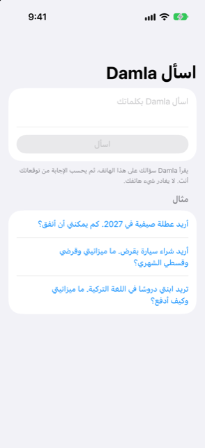

الدليل › التخطيط
اسأل Damla
اسأل بكلماتك ما إذا كان بوسعك تحمّل عطلة أو سيارة أو دروسًا.
اسأل Damla صندوق أسئلة في تبويب الخطة يجيب عن "هل أستطيع تحمّل هذا؟" من توقّعك الخاص. تكتب السؤال كما كنت ستقوله. يخبرك Damla بالمبلغ الذي يستطيع مالك حمله، وما يستند إليه هذا الجواب.

متى تستخدمه
- قبل أن تلتزم بعطلة أو زفاف أو دورة أو انتقال إلى منزل آخر، وتريد أن تعرف ماذا يسمح به توقّعك.
- عندما تفكر في شراء شيء بقرض وتريد الميزانية، والقرض الذي يستطيع مالك حمله، والدفعة الشهرية.
- عندما يُدفع شيء على مدى وقت (دروس، دورة) وتريد مقارنة الدفع دفعة واحدة بتوزيعه على أقساط.
- وفي أي وقت كنت ستتساءل فيه لولا هذا "ماذا لو أنفقت ذلك؟"
خطوة بخطوة
- افتح تبويب الخطة وانقر اسأل Damla.
- انقر الصندوق الموسوم "اسأل Damla بكلماتك" واكتب سؤالك. يمكنك أيضًا النقر على أحد الأسئلة الجاهزة تحت مثال لملء الصندوق.
- انقر اسأل.
- اقرأ الجواب. بطاقة تعرض الرقم الرئيسي؛ وتحته التفاصيل وقسم اسمه على ماذا يستند هذا.
- إذا لم يفهمه Damla، يقول ذلك. جرّب تسمية الشيء (عطلة، سيارة بقرض، دروس)، وأضف التاريخ أو السعر إن كنت تعرفه.
- للإنفاق أو خطة دفع، انقر ادخار لهذا الغرض إذا أردت تحويل الجواب إلى هدف: يضيفه Damla بهذا المبلغ والتاريخ، ليستطيع حساب ما يجب تخصيصه كل شهر.
كيف يُصنع الجواب
يقرأ Damla سؤالك على هذا الهاتف ليكتشف مما يتعلق الأمر، ومتى تحتاج المال، وأي سعر أو مدة أو نسبة فائدة كتبتها. النموذج يقرأ الكلمات فقط؛ ولا يحسب أبدًا.
ثم يُحتسب الجواب بكود عادي انطلاقًا من توقّعك:
- لعطلة أو إنفاق آخر: مبلغ مريح وأقصى ما يسمح به توقّعك. مريح يعني 80% من الأقصى، بحيث تبقى مساحة للمفاجآت. إذا ذكرت سعرًا، تُظهر شارة هل يفيه المبلغ مريحًا، أم يفيه لكن بإحكام، أم أنه أكثر مما يسمح به توقّعك.
- لسيارة أو قرض آخر: دفعة شهرية مريحة، وأقصى ما يسمح به الشهر، والقرض الذي تحمله تلك الدفعة على المدة التي تختارها. ويعرض أيضًا الدفعة الأولى التي ما زالت ممكنة، وميزانيتك الإجمالية. غيّر مدة القرض بالأشهر بمنتقي التدرّج، أو نسبة الفائدة السنوية في حقله. يتحدّث الجواب كلما غيّرتهما. وإذا كتبت سعرًا، يعرض Damla شكل ذلك السعر كدفعة أولى مع دفعات شهرية.
- للدروس أو أي شيء يُدفع على مدى وقت: إذا قلت السعر، يقارن Damla بين الدفع دفعة واحدة وتوزيعه دفعات شهرية متساوية. يعرض كل طريقة مع أدنى رصيد تسبّبه، ويوصي بأقل عدد من الدفعات يبقي رصيدك مريحًا. وإذا لم تقل السعر، يعرض ما يمكنك دفعه شهريًا على أعداد أشهر مختلفة.
على ماذا يستند هذا
يستخدم الجواب توقّعك: دخلك وفواتيرك وبطاقاتك وإنفاقك المعتاد، والمال الموجود أصلًا في حساباتك. ويُحتسب أيضًا الإنفاق اليومي من حساباتك البنكية الذي ليس فاتورة أصلًا، ويذكر القسم كم في الشهر افترضه. وتحت ذلك ترى أيضًا تاريخ بداية التوقّع، وأدنى رصيد عندك، وعندما يهم ذلك، الرصيد في ذلك التاريخ.
جيد أن تعرف
- سؤالك وبياناتك يبقيان على الهاتف. لا شيء يغادره.
- الجواب تقدير من أرقامك أنت، لا نصيحة مالية.
- الرقمان اللذان تقارنهما هما المريح والأقصى. أنفق أكثر من المريح فقط إذا قبلت بهامش أنحف للمفاجآت.
- يتغيّر الجواب كلما تغيّرت دفاترك، لذا يمكنك السؤال مرة أخرى بعد إضافة دخل أو فواتير.
مواضيع ذات صلة
هل هناك شيء غير واضح أو ناقص؟ اكتب إلى support@raveniq.ai واذكر الصفحة.